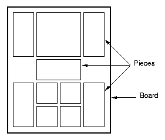
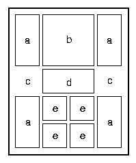

Ane
rouge
Introduction.
L'intérêt de cet exemple est qu'il se compose de deux phases
distinctes. La première phase calcule un ensemble d'états
et teste leur validité. Elle permet en outre d'éliminer un
grand nombre d'états invalides et donc de soulager la seconde phase
qui consiste en le calcul de graphes dont les états de départs
sont pris parmi les états valides calculés à l'étape
précédente. De plus, on cherche à optimiser la charge
en arrêtant les tâches qui se révélent inutiles
au fur et à mesure que le calcul des graphes avance.
Description.
L'image ci-dessous est un exemple de plateau de jeu de l'âne rouge:

Pour décrire une position particulière du jeu, nous commençons
par étiquetter chaque pièce par une lettre, par exemple:

Si nous lisons les lettres en partant du coin gauche supérieur
jusqu'au coin droit inférieur, nous obtenons un mot codant cette
position : "abacdcaeeaee". Ce codage est pratique puisqu'il nous permettra
de générer facilement toutes les positions possibles par
permutation lexicographique. Cependant, parmi ces positions se trouveront
des doublons (puisqu'il existe des pièces identiques) et des positions
invalides (ne pouvant tenir dans le plateau).
1.
Phase 1.
La première phase consiste à calculer la totalité
des états valides à partir desquels on calculera l'ensemble
des graphes. Cet ensemble d'états ne doit donc pas contenir de doublons.
On fournit donc deux bornes à chaque tâche. Celles-ci correspondent
au rang inférieur et supérieur des permutations à
tester. La tâche génére donc les permutations, vérifie
qu'elle consiste en une disposition valide (i.e. qui tient dans
le plateau) puis, si elle n'est pas déjà connue, l'ajoute
à son ensemble de positions valides. L'ensemble des positions est
ensuite récupéré au niveau du manager. On remarquera
que, les tâches ne testant qu'un nombre restreint de permutations,
il restera des doublons parmi les états valides calculés
par des tâches différentes. Le
manager devra donc éliminer
ces doublons.

Phase 1.1: chaque tâche teste toutes les
positions qui lui sont affectée. Elle élimine les doublons
et les positions invalides.

Phase 1.2: les résultats sont envoyés
au ResultRepository. Il reste cependant des doublons.

Phase 1.3: le manager récupère
les résultats et élimine les doublons restants.
Cette phase permet d'éliminer un grand nombre d'états
à tester. Prenons l'exemple du mot "abacdcaeeaee". Contenant 12
pièces, nous pouvons générer 12! = 479 001 600 permutations.
En éliminant les doublons, le nombre de positions valides tombe
à (12!)/(4! x 2! x 4 !) = 415 800 soit environ 10 fois moins.
En éliminant encore les positions invalides, c'est à dire
ne pouvant tenir dans le plateau, le nombre atteint approximativement 115
000 états. Soit finalement environ 4000 fois moins d'états
à tester.
2.
Phase 2.
La seconde phase consiste en la génération des graphes.
La première phase a permis d'éliminer un grand nombre d'états.
Les états restants sont distribués aux tâches. Chaque
tâche reçoit un état de départ, puis calcule
le graphe des états pouvant être atteints. Le graphe résultat
est stocké dans le RepositoryManager.
Lorsqu'un nouveau graphe est stocké, le TaskManager
examine tous les états qu'il contient ce qu'il lui permet d'arrêter
les tâches dont l'état de départ a été
visité lors du calcul d'un autre graphe.